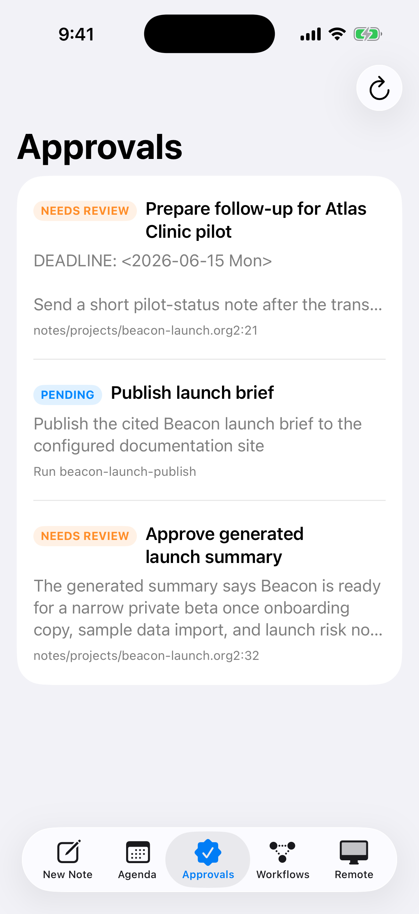

Org2
A plain-text workspace for notes, data, meetings, and agent work
Org2 gives people and agents one local, plain-text workspace for work that needs to outlive one app: notes, tasks, meetings, source files, data, decisions, generated artifacts, and published docs. The same shared semantics power planning, visualization, cited agent context, durable runs, approvals, and review.
Org2 is an early OSS project for turning folders of notes, transcripts, tasks, files, links, data records, and metadata into a corpus you can search, plan from, lint, refactor, hand to agents, and publish. It is meant for individuals and organizations that want durable context with local files as the source of truth. Sensitive notes can stay end-to-end encrypted with keys you control, while selected subtrees can be encrypted to a particular person, device, or agent when you want help.
The native Mac app brings those pieces into an early open-source workspace for AI-assisted work. It carries Org's tradition of keeping planning and knowledge in inspectable text into meetings, browser-grade document rendering, interactive data views, agent runs, and approval-gated execution. The CLI, compiler, and normal files remain useful on their own.
What an Org2 file looks like
One plain-text document can carry notes, tasks, dates, links, data records, source provenance, and agent handoff boundaries while staying readable in any editor.
#+title: Product launch workspace
#+filetags: :launch:q3:
#+roam_aliases: beta launch rollout
* TODO Ship beta checklist :product:
SCHEDULED: <2026-06-01 Mon>
DEADLINE: <2026-06-12 Fri>
:PROPERTIES:
:ID: launch-beta-checklist
:EFFORT: 3h
:OWNER: Product
:END:
- [X] Draft invite copy
- [ ] Confirm onboarding path with [[id:design-review][design review]]
- [ ] Publish release notes from [[file:release-notes.org2][release notes]]
** Meeting notes
Decisions:
- Keep beta small until support docs are complete.
- Track follow-ups in the same file as the project plan.
** Source query for docs
``` sh
org2 query --tag launch --format json
```
** Launch readiness data :evidence:
:PROPERTIES:
:ID: launch-readiness-data
:KIND: dataset
:FRESHNESS_SLA: 24h
:END:
```dataset launch_readiness
type: csv
path: data/launch-readiness.csv
engine: duckdb
```
```sql results=launch_readiness_summary artifact=views/launch-readiness.org freshness=24h
SELECT week, activated_users, blocker_count
FROM launch_readiness
ORDER BY week DESC
```
** TODO Summarize launch blockers
:PROPERTIES:
:ID: launch-blocker-summary
:ASSIGNEE: codex
:STATUS: ready
:CONTEXT: id:launch-beta-checklist, id:launch-readiness-data
:END:
Summarize launch blockers with citations.
* AI draft summary :draft:
:PROPERTIES:
:ORG2_ARTIFACT_ROLE: view
:ORG2_PROVENANCE: file:raw/calls/beta-kickoff.org2, id:launch-readiness-data
:ORG2_CLAIM_STATE: source-backed
:ORG2_REVIEW_STATUS: review-required
:END:
The beta should emphasize local files, agenda workflows,
and source-backed AI summaries.The idea
Org2 combines six useful traditions:
the portability and low friction of plain-text notes,
the structured programmability of Org-style TODOs, links, dates, tags, and properties,
the Zettelkasten habit of growing knowledge through small linked notes that compound into a graph,
the notebook/dashboard habit of keeping queries, tables, charts, and source artifacts near the claims they support,
the publishing habit of producing public docs and shareable reports from the same source,
the provenance and workflow boundaries agents need to work safely in a real knowledge base.
The result is a shared working graph: notes, tasks, events, sources, entities, external records, generated drafts, and durable knowledge stay connected while still living in ordinary files. Raw imports can live in raw/, durable notes in the normal corpus, generated drafts in views/, and compiled indexes in compiled/. Agents can automate the pipeline, while humans still have natural places to inspect or steer when judgment matters.
What you can do with it
Plan from the same files you write in: build agendas and work views from TODOs, deadlines, scheduled dates, tags, and metadata across a whole workspace.
Track work without a separate app: keep project notes, decisions, follow-ups, and next actions connected in the same graph.
Build personal or team memory: keep entity pages, meeting memory, customer notes, repo work, tickets, metrics, and project timelines in a form people can read and agents can cite.
Ask better questions of your context: query headings, links, tasks, IDs, dates, agent threads, data links, and provenance through structured corpus output.
Use AI without losing the trail: keep transcripts and imports as sources, generate drafts with citations, and promote outputs into lasting notes when they are ready.
Connect reports to evidence: describe warehouse queries, local datasets, tables, charts, and generated artifacts without storing secrets or warehouse-scale data in notes.
Keep links from rotting: generate IDs, inspect backlinks, linkify likely references, and lint graph health.
Publish when useful: turn the same source tree into HTML docs, a digital garden, or project documentation.
For individuals and organizations
For an individual, Org2 can be a life/work memory system: daily notes, projects, meetings, tasks, source material, backlinks, AI drafts, and agenda views all live in the same local corpus.
For an organization, the same format can hold higher-leverage operational context: customer reports, support narratives, repo and ticket trails, decision records, metrics snapshots, business event timelines, and durable agent outputs. Org2 can name, link, cite, and compile the context those apps produce, so the knowledge layer stays portable across clients and automations.
Private-by-default agent collaboration
A useful agent workspace needs a precise sharing boundary. Org2's crypt workflow keeps encryption at the subtree boundary: one entry can be readable only by you, another can be encrypted to your phone and laptop, and a third can add an agent public key for a specific task.
That gives you a practical local-first access model:
plaintext lives in your editor only when you decrypt it,
encrypted notes remain ordinary files that can sync through Git, iCloud, Syncthing, or any other file transport,
each subtree declares the recipients that should be able to open it,
agents only get access to the encrypted entries whose recipient list includes their key.
That gives AI-assisted personal knowledge work a strong default: self-hosted, inspectable, GPG-based, and scoped per note.
Plain text, serious context
Org2 keeps examples ergonomic by default: use concise headings, property drawers, tables, wiki links, ID links, and fenced source blocks where they make the document easier to read by hand. Verbose compatibility forms remain available, while the main user-facing path should feel like a modern plain-text application document with structure where it pays for itself.
That matters because the corpus is more than prose. A file can describe:
entities, aliases, IDs, backlinks, and relationships,
tasks, schedules, decisions, and follow-up history,
meetings, transcripts, summaries, and action items,
agent threads, selected context, transcript references, and durable outputs,
datasets, query IDs, row counts, freshness, charts, and generated report artifacts.
The goal is boring composability: plain files that are easy to inspect, easy to version, and rich enough for clients, CLIs, and agents to use without scraping rendered UI.
Screenshots



How it works
Org2 is a compiler/runtime for plain-text knowledge:
raw captures source material,
notes hold reviewed knowledge in normal editable files,
compiled stores resolved semantics such as agenda state, graph edges, provenance, and artifact roles,
views hold derived artifacts like agendas, work plans, diagnostics, AI drafts, and backlinks,
publish turns selected material into websites or shareable reports.
The practical payoff: one source tree can drive daily planning, work tracking, editor features, corpus-health checks, AI handoffs, and a public website without locking the work into one app.
Who it is for
Org2 is a good fit if you want:
local notes that remain useful outside any single app,
planning and work tracking that live beside the notes,
AI workflows with citations and clear promotion paths,
a queryable personal or team knowledge base,
automation that can read and write structured notes safely,
publishing from the same corpus you use privately.
It is early alpha, but already practical for CLI + VS Code workflows. Language behavior follows a clear Org2 standard informed by Org Mode's durable plain-text ideas, with portability and shared compiler semantics guiding compatibility decisions.
Start here
Reference post: Standalone Org rationale